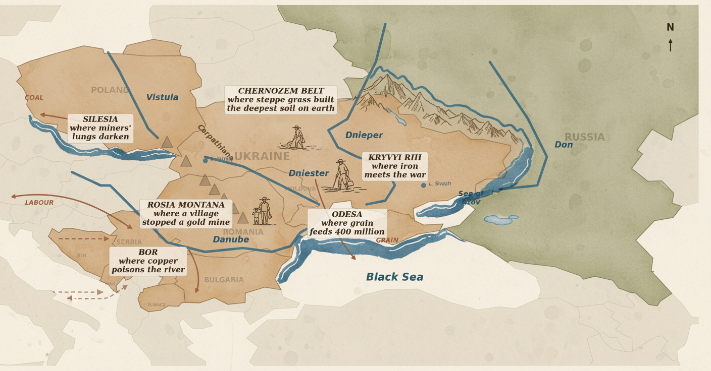

Pontic Steppe247M people
where steppe grass roots built chernozem over millennia, and the grain that replaced the grass mines the soil the grass made
The black earth of Ukraine is the deepest topsoil on the planet — three metres of chernozem, built over ten thousand years by the slow work of grass roots dying and returning. Before the war, a farmer in Kherson oblast could push a spade to its full depth and still not reach clay. That soil fed 400 million people: wheat shipped from Odesa through the Bosphorus to bakeries in Cairo, Tunis, Beirut.
Lives Lived Here
Before dawn in a village outside Vinnytsia, a woman in her seventies feeds chickens in a yard that used to hold a dairy operation. Her son drives a delivery truck in Warsaw. Her daughter cleans offices in Munich. They send money home each month — enough to keep the house, pay for gas, buy medicine from the pharmacy in the district town. The farm is too small to interest agribusiness and too large for one elderly woman to work alone. The neighbour's plot has already been sold to a company from Kyiv. The chickens are what remains of a working farm.
In Komyshuvaska hromada, Zaporizhzhia oblast, a Shelter Cluster team checks whether the heating system installed last autumn still works. The Soviet-era district heating pipes were severed by shelling; the replacement is an individual unit, powered by a generator, fuelled by diesel that arrives by truck from Dnipro when the road is safe. The family using it — a grandmother, her daughter, two school-age children — returned after six months in Lviv because the grandmother refused to die away from home. The heating works. The school does not — it was hit in October.
In Baia Mare, northern Romania, a Roma family lives in a settlement on the edge of town, four hundred metres from the nearest paved road. The father works seasonal construction in Italy, March through November. The mother manages the household and three children on remittances that arrive irregularly. The eldest, fourteen, wants to study nursing but the nearest secondary school requires a bus fare the family cannot always afford. The settlement has no connection to the municipal water system. The well was tested by an NGO in 2019 and found to contain heavy metals from the old Baia Mare gold mine tailings — the same mine whose cyanide spill in 2000 killed every fish in the Tisza River for three hundred kilometres. The family drinks the water anyway. There is no other water.
In Chișinău, a retired teacher opens her gas bill and sees a number that takes a third of her pension. The gas comes from Russia, via Ukraine, via Transnistria — a supply chain that crosses a war zone and a breakaway territory before reaching her kitchen stove. She has reduced her heating to one room. Her neighbour, who is younger and works two jobs, has done the same. The building was designed in 1974 for a gas price that no longer exists and an empire that no longer governs.
In Komyshuvaska hromada, Zaporizhzhia oblast, a Shelter Cluster team checks whether the heating system installed last autumn still works. The Soviet-era district heating pipes were severed by shelling; the replacement is an individual unit, powered by a generator, fuelled by diesel that arrives by truck from Dnipro when the road is safe. The family using it — a grandmother, her daughter, two school-age children — returned after six months in Lviv because the grandmother refused to die away from home. The heating works. The school does not — it was hit in October.

Artistic impression. Geographic features are approximate.
What Presses
The weight on Pontic Steppe
Kherson oblast, Ukraine — The Kakhovka dam is gone. Blown in June 2023, it drained the reservoir that irrigated the entire southern breadbasket — canals that watered sunflower, wheat, and vegetable fields across thousands of square kilometres are now dry concrete channels leading nowhere. The farmers who remain are rain-dependent in a region designed for irrigation, planting what they can in fields they know are partially mined, harvesting what the shelling leaves standing. A farmer outside Beryslav described his calculation to the FAO: plant sunflowers in the field you are reasonably sure is clear, accept that the far side may not be, and hope the rain comes because the canal will not. His wife left for Dnipro with the children after the school was hit. He stays because someone must.
Baia Mare, Romania — In the Roma settlement on the edge of town, the water comes from a well that an NGO tested in 2019 and found contaminated with heavy metals from the old gold mine tailings. The Baia Mare cyanide spill of January 2000 — a tailings dam failure at the Aurul gold processing plant — sent a plume of cyanide and heavy metals down the Somes and into the Tisza, killing everything in the river for three hundred kilometres into Hungary and Serbia. Twenty-six years later, the Roma settlement has no municipal water connection. The contamination is in the soil. The families drink from the well because there is no pipe and no plan to lay one. The children walk to school when the family can afford the bus fare; when they cannot, they stay home. The settlement is four hundred metres from the nearest paved road and six hundred years from inclusion.
Chișinău, Moldova — The gas bill arrives and a retired teacher calculates what she can afford to heat. One room, not two. She wears a coat indoors from November to March. The gas comes from Gazprom, piped through Ukraine and Transnistria — a supply route that crosses an active war and a frozen conflict before reaching her stove. Moldova owes Russia four to five billion euros in accumulated gas debt, a sum that functions less as a bill than as a leash. The teacher's pension is two hundred euros a month. She taught history for thirty-five years and now she rations heat in a building designed for cheap Soviet gas that no longer exists at that price, in a country whose sovereignty is measured in cubic metres of fuel it cannot afford to buy from the only supplier willing to sell.
Seven resource streams leave the breadbasket annually — wheat, corn, sunflower, gas, oil, coal, lignite — worth tens of billions at their destination markets. What does not return is the topsoil, lost at three to six tonnes per hectare per year under intensive monoculture; the young people, whose departure makes consolidation possible; and the water, which in southern Ukraine no longer exists in the quantities the canals were built to carry. 12,439 killed (3 months); 4.1M displaced (total); grains, potatoes, vegetables, wheat, corn, sunflower seeds, gold (proposed, NOT operational) leaving; 428 fires (7 days).
This Week
Ukraine: Shelter Cluster teams in Zaporizhzhia oblast checked winterisation heating in Komyshuvaska, Petro-Mykhailivska, and Mirivska hromadas — assessing whether families who returned to front-line communities can survive the last weeks of winter in buildings whose original heating infrastructure was destroyed by shelling.
Ukraine: A needs assessment methodology report was released for communities affected by hostilities in Ukraine, aimed at collecting systematic data for recovery planning — the bureaucratic infrastructure of rebuilding, being assembled while the destruction continues.
Romania: A Swiss delegation visited Romania to review support for displaced Ukrainians, meeting with UNHCR and government officials — Romania has received tens of thousands of refugees since 2022, in communities that were already managing their own economic pressures.
Romania: IFRC reported on Romania's ongoing response to Ukrainian displacement, noting the significant number of people who arrived seeking safety, stability, and access to essential services — a displacement that is now entering its fourth year with no end in sight.
The soil does not know whose flag flies over it. It goes on doing what it has always done — turning death into life, season after season, three metres deep. The people who work it know exactly whose flag flies over it, and that knowledge determines whether they plant or flee.
For Prayer
For the 4.1 million people displaced from their homes — especially in Ukraine, where the crisis is most acute. This week in Moldova: TP in Moldova: legal nature and limitations While TP has enabled rapid protection and relative stability, its temporary character creates structural limitations, particularly as displacement becomes protracted: ▪ TP does not automatically lead to.... For safety on the road and welcome at the journey's end.
For communities enduring armed conflict between Ukrainian Armed Forces across Pontic Steppe — 12,000 killed in the past three months. This week in Ukraine: Key events 2 Mar. Donetsk — Russian shelling kills two civilians and a police captain in Druzhkivka 4 Mar. Odesa — Russian drones strike a Panama-flagged vessel near the port of Chornomorsk, wounding three crew members 6 Mar.. For protection of civilians and for those who have lost loved ones.
Especially for Ukraine, facing the most severe convergence of crises in this region. This week in Ukraine: Agenda: Welcome and participant Introductions. Discussion on data dissemination for reporting and dashboard development. Discussion on amendments to the Terms of Reference of the VA Working Group. AOB.. For those making impossible decisions about whether to stay or flee, and for those who cannot choose.
For humanitarian workers and missionaries in Pontic Steppe — for their safety, their courage, and their capacity to reach those most in need.
For every act of resistance and care in Pontic Steppe — communities sharing food, farmers saving seed, neighbours sheltering neighbours. That these small acts of defiance outlast the crisis.
Out of the depths have I cried to you, O Lord; Lord, hear my voice; let your ears consider well the voice of my supplication.
Most merciful God, who by the death and resurrection of your Son Jesus Christ delivered and saved the world: grant that by faith in him who suffered on the cross we may triumph in the power of his victory; through Jesus Christ your Son our Lord, who is alive and reigns with you, in the unity of the Holy Spirit, one God, now and for ever.
Amen.
Seeds of Hope
In Romania, the twenty-year fight to block the Rosia Montana gold mine is one of Europe's most successful environmental resistance campaigns. Gabriel Resources, a Canadian company, proposed an open-pit cyanide-leach mine in the Apuseni Mountains that would have destroyed four villages, 1,600 hectares of mountain forest, and the Aries River watershed.
For Reflection
How does your government's policy contribute to or mitigate this violence?
What would you risk for peace if you lived there?
Looking Ahead
- The spring planting season (March-April) is underway across the chernozem belt under a sixteen-percent precipitation deficit that will reduce winter wheat yields if it persists through April.
- In southern Ukraine, the loss of the Kakhovka reservoir means rain-dependent farming in a region that was irrigated for fifty years — a structural change, not a seasonal one.
- Ukraine grain corridor negotiations -- Black Sea shipping access determines whether Egyptian, Tunisian, and Lebanese bread prices spike; each closure doubles Cairo's wheat cost within weeks
- Spring planting season March-May in Ukraine -- the area planted determines global wheat supply for 2026-27; mined fields in Zaporizhzhia and destroyed Kherson irrigation limit capacity
- Polish coal phase-out milestones -- Silesian coal transition planning determines whether 100,000 mining jobs transition to alternatives or add to structural unemployment
Carry This
What to bring with you from this briefing
Take Action
Organizations working at the nodes this briefing traces
Uses satellite imagery and open-source analysis to document conflict impacts on agricultural infrastructure in Ukraine — destroyed grain storage, mined farmland, damaged irrigation systems, and environmental contamination from military operations.
Quantifies the war damage to the grain production the briefing traces — destroyed silos in Odesa and Mykolaiv, mined black earth fields in Kherson, and bombed port infrastructure that blocks Ukrainian wheat and sunflower oil from reaching import-dependent countries in the Middle East and North Africa.
Ukrainian environmental organization documenting the ecological consequences of war — soil contamination from munitions, water pollution from destroyed industrial sites, and the climate impact of military emissions. Advocates for environmental accountability in post-war reconstruction.
Documents the environmental dimension the briefing traces — where heavy metal contamination from artillery renders black earth unfarmable, destroyed dams flood agricultural land, and post-war mine clearance will take decades, transforming the world's most fertile soil into a contaminated landscape requiring remediation before it can feed anyone.
International organization tracking corporate concentration in global grain markets, land grabbing, and the financialization of food. Documents how Black Sea grain disruption reshapes global commodity flows and who profits from food price volatility.
Traces the grain market dynamics the briefing documents — how war-disrupted Ukrainian and Russian wheat exports drive price spikes that cause food crises in Egypt, Lebanon, and Somalia, while commodity traders and agribusiness giants profit from volatility, and smallholder farmers globally bear the cost of input price inflation.
Ukrainian-American civil society organization providing humanitarian aid, medical supplies, and community support to war-affected populations. Works with displaced farming families, rural communities under occupation, and agricultural workers maintaining production under fire.
Supports the farming communities the briefing identifies as cost-bearers — families in Kherson and Zaporizhzhia regions attempting to plant and harvest under shelling, displaced agricultural workers who lost access to their land, and rural communities whose grain storage and equipment were destroyed by military operations.
Supports migrants and refugees in Poland, including the largest Ukrainian refugee population in Europe. Provides legal aid, integration support, and advocates for labor rights of migrant agricultural and factory workers.
Works with the labor migration flows the briefing traces — Ukrainian refugees entering Poland's agricultural and manufacturing workforce, seasonal workers from Ukraine and Belarus who harvested crops across the EU before the war, and the remittance networks that sustain families in conflict-affected regions.
Generated 2026-03-18